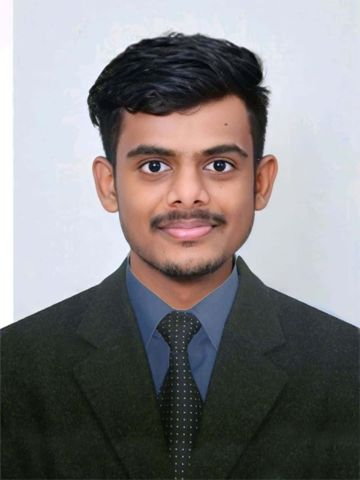

M.Sc. Sensor Systems Technology student at Hochschule Karlsruhe, building robots, PLC controls and embedded systems.
Looking for working student and internship roles in robotics, embedded systems and automation in Germany.
Electrical and electronics engineer, now in a master's in sensor systems. Hands-on with ROS 2, inverse kinematics and sensor integration in Python and C++, PLC programming and electrical fault diagnosis from industry.
Robots, PLC controls and embedded builds, each with what it achieved.
Smaller simulations and practice builds that are not in my CV.
These cards are placeholders. Each one gets a title, a short description and a video.
Based in Karlsruhe and open to relocating within Germany. The quickest way to reach me is email.